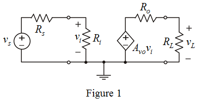
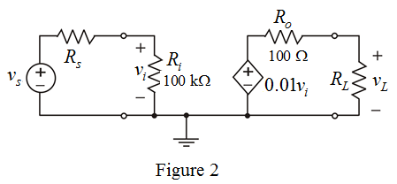

Apply voltage division rule and determine the expression for .
Determine the expression for output voltage.

Substitute for  in the equation.
in the equation.
Draw the circuit diagram of voltage amplifier.

Apply voltage division rule and determine the expression for .
Determine the expression for output voltage.
Substitute for in the equation.
Consider, if  is varied keeping
is varied keeping constant, then write the conditions for
constant, then write the conditions for  and .
and .
Calculate the relative change in load voltage.
 is.
is. That is,
Substitute for in the equation.
Simplify further,
Consider the value of input resistance,  is of the form
is of the form  .
.
Write the value of input resistance of the form  .
.
Therefore, the value of input resistance is  .
.
Consider, if  is varied keepingconstant, then write the conditions for and .
is varied keepingconstant, then write the conditions for and .
Calculate the relative change in load voltage.
 is
is .
.
Consider the value of input resistance,  is of the form
is of the form  .
.
Write the value of input resistance of the form .
Therefore, the value of output resistance is  .
.
Sketch the circuit model.

Determine the intrinsic voltage gain of the circuit.
Therefore, the voltage gain is .
The input resistance is very high and output resistance is very low. The amplifier is trans-conductance amplifier.
Therefore, the amplifier is trans-conductance amplifier.